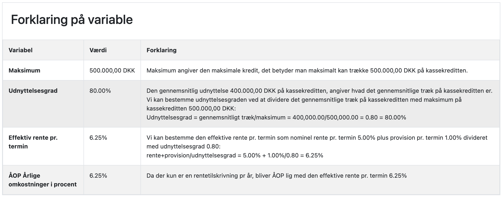
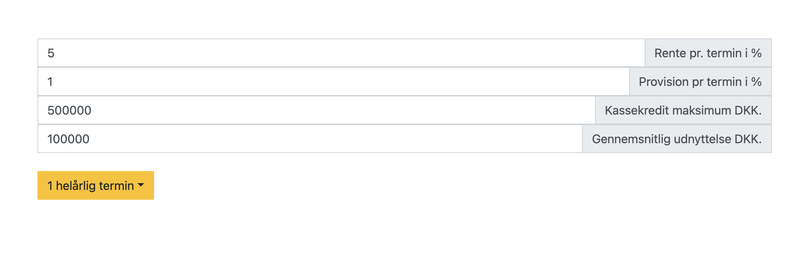
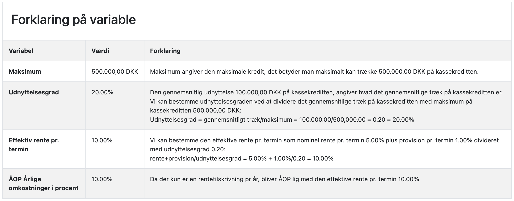
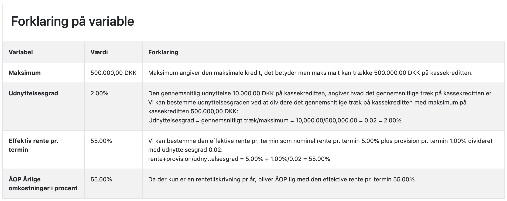
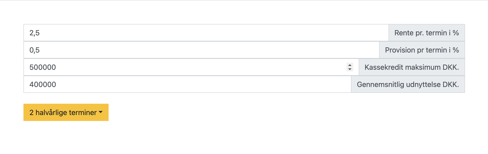
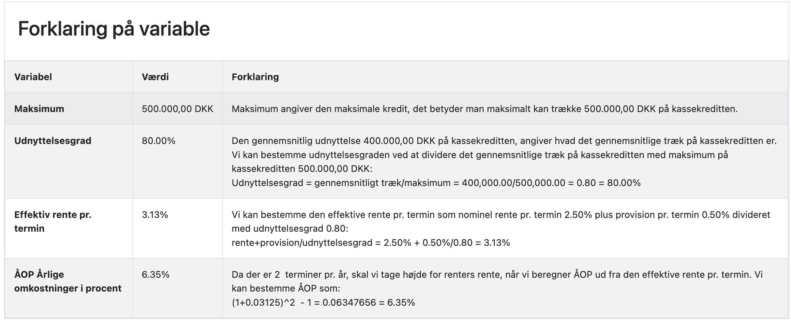

Kassekredit
En kassekredit er en fleksibel låneform, hvor virksomheden får stillet et maksimumbeløb til rådighed, som den kan trække på efter behov. Kassekreditten fungerer som en økonomisk stødpude, der kan hjælpe med at dække kortsigtede likviditetsbehov.
Sådan fungerer en kassekredit
Når en bank bevilger en kassekredit, fastsættes typisk følgende:
- Maksimumbeløb: Det højeste beløb, virksomheden kan trække på kreditten
- Rente: Den årlige rente, der betales af det udnyttede beløb
- Provision: Et gebyr, der beregnes af hele maksimumbeløbet der må trækkes på kassekreditten
Kassekredit uden provision
| Tekst | Værdier | Beregning | Rentebeløb |
|---|---|---|---|
| En virksomhed har en kassekredit på 500.000 kr. med en rente på 5% p.a. og udnytter 300.000 kr. i et år | Udnyttet beløb = 300.000 Rente = 5% |
300.000 * 5% | 15.000 kr. |
Kassekredit med provision
| Tekst | Værdier | Beregning | Rentebeløb |
|---|---|---|---|
| Samme kassekredit som ovenfor, men med en provision på 1% af maksimumbeløbet | Udnyttet beløb = 300.000 Rente = 5% Maksimumbeløb = 500.000 Provision = 1% |
Renteomkostning: 300.000 * 5% = 15.000 Provision: 500.000 * 1% = 5.000 Samlet: 15.000 + 5.000 |
20.000 kr. |
Udnyttelsesgrad og effektiv rente
Udnyttelsesgraden har stor betydning for den effektive rente på kassekreditten. Jo lavere
udnyttelsesgrad, desto
højere bliver den effektive rente. Dette er et værktøj der gør banken i stand til at sikre en vis
indtjening på den likviditet der stilles til rådighed. Samtidig sikrer provisionen at låntager har
et incitament til at tilpasse kassekreditten til det faktiske livkiditetsbehov.
Vi kan generelt bestemme den effektive rente pr. termin som nominel rente pr. termin plus provision
pr. termin
divideret med udnyttelsesgrad:
App til kassekredit
Du kan udregne ÅOP for en kassekredit i Excel eller i en app, herunder er link til App til kassekredit
App til kassekreditEksempler
Scenarie 1: Høj udnyttelsesgrad (80%)
| Tekst | Værdier | Beregning | ÅOP |
|---|---|---|---|
| Kassekredit med maksimum på 500.000 kr., rente 5% p.a., provision 1%, udnyttet beløb 400.000 kr. |
Maksimumbeløb = 500.000 Rente = 5% Provision = 1% Udnyttet beløb = 400.000 |
Renteomkostning: 400.000 * 5% = 20.000 Provision: 500.000 * 1% = 5.000 Samlet omkostning: 20.000 + 5.000 = 25.000 Effektiv rente: (25.000 / 400.000) * 100 Alternativt kan den effektive rente beregnes som: nominel rente + provision divideret med udnyttelsesgrad: rente+provision/udnyttelsesgrad = 5% + 1%/0,80 |
6,25% |
| Med app:  | |||
Scenarie 2: Lav udnyttelsesgrad (20%)
| Tekst | Værdier | Beregning | ÅOP |
|---|---|---|---|
| Samme kassekredit som ovenfor, men med udnyttet beløb på 100.000 kr. |
Maksimumbeløb = 500.000 Rente = 5% Provision = 1% Udnyttet beløb = 100.000 |
Renteomkostning: 100.000 * 5% = 5.000 Provision: 500.000 * 1% = 5.000 Samlet omkostning: 5.000 + 5.000 = 10.000 Effektiv rente: (10.000 / 100.000) * 100 Alternativt kan den effektive rente beregnes som: nominel rente + provision divideret med udnyttelsesgrad: rente+provision/udnyttelsesgrad = 5% + 1%/0,20 |
10% |
| Med app:   | |||
Scenarie 3: meget lav udnyttelsesgrad (2%)
| Tekst | Værdier | Beregning | ÅOP |
|---|---|---|---|
| Samme kassekredit som ovenfor, men med udnyttet beløb på 10.000 kr. |
Maksimumbeløb = 500.000 Rente = 5% Provision = 1% Udnyttet beløb = 10.000 |
Renteomkostning: 10.000 * 5% = 500 Provision: 500.000 * 1% = 5.000 Samlet omkostning: 5.000 + 500 = 5.500 Effektiv rente: (5.500 / 10.000) * 100 Alternativt kan den effektive rente beregnes som: nominel rente + provision divideret med udnyttelsesgrad: rente+provision/udnyttelsesgrad = 5% + 1%/0,02 |
55% |
Med app: 
 | |||
Scenarie 4: Halvårlig rentetilskrivning udnyttelsesgrad (80%)
| Tekst | Værdier | Beregning | ÅOP |
|---|---|---|---|
| Kassekredit med maksimum på 500.000 kr., rente 5% p.a., provision 1%, udnyttet beløb 400.000 kr. Rentetilskrivning halvårligt |
Maksimumbeløb = 500.000 Rente = 2,5% Provision = 0,5% Udnyttet beløb = 400.000 |
Renteomkostning: 400.000 * 2,5% = 10.000 Provision: 500.000 * 0,5% = 2.500 Samlet omkostning: 10.000 + 2.500 = 12.500 Effektiv terminsrente: (12.500 / 400.000) * 100 Alternativt kan den effektive terminsrente beregnes som: nominel terminsrente + provision pr. termin divideret med udnyttelsesgrad: terminsrente+provision pr. termin/udnyttelsesgrad = 2,5% + 0,5%/0,80 = 3,125% Omregnet til ÅOP (1+3,125%)^2-1 = 6,35% |
6,35% |
| Med app:   | |||
Som det ses, bliver den effektive rente markant højere ved lav udnyttelsesgrad. Derfor er det vigtigt for virksomheder at vurdere deres reelle behov, når de fastsætter maksimumbeløbet for en kassekredit.
Quiz
Quiz kassekreditQuiz kassekredit